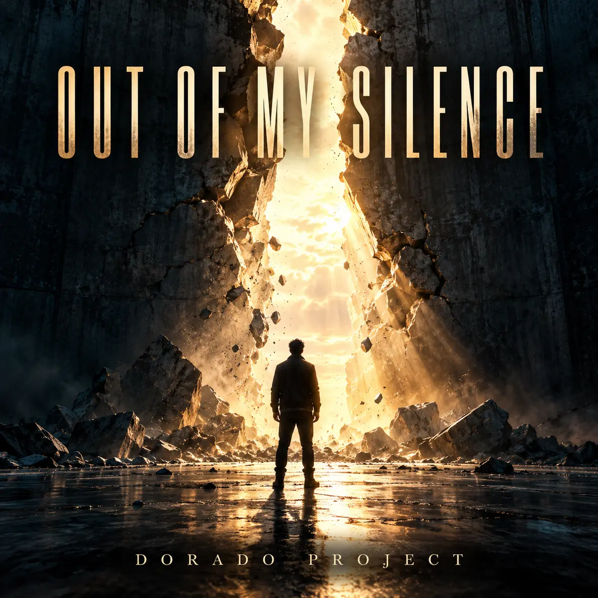

← All releases

NEW SINGLE · IN DEVELOPMENT
Out of My Silence
Alternative rock / Stadium rock
Out of My Silence is an English-language alternative stadium rock song by Dorado Project about breaking a long silence and finding the courage to speak, even when your voice shakes.
Spotify link to follow when the track is available.
Finding a voice of your own
A coat left beside the door, a nervous laugh arriving a beat too late, and the familiar answer that everything is fine: Out of My Silence begins with the small habits of someone who has spent years holding back. Its chorus turns that hesitation into a declaration: let the words come broken, let them come loud. The song is written for restrained verses, driving bass, chiming and overdriven guitars, raw male vocals and a broad communal chorus. A stripped-back bridge builds towards the final release, with a repeating vocal response and a gradual fade-out. The artwork mirrors that turning point: a lone figure faces a dark wall breaking open into golden light.
More from Dorado Project
From synthpop to rock: explore more tracks and the story behind Dorado Project.
Explore all tracks →